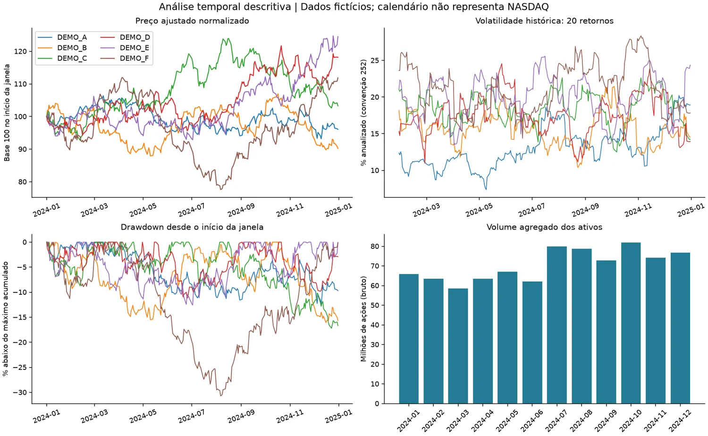

Análise de Dados e BI
Indicadores, dashboards e análises que conectam operação e negócio.
SQL · Power BI · DAXAnálise de Dados · Business Intelligence · Ciência de Dados
Sou Gabriel Álef. Desenvolvo soluções de BI, do levantamento de requisitos à integração e modelagem de dados, construção de dashboards e validação com usuários. Conecto indicadores financeiros e operacionais às decisões de negócio e exploro segmentação e Machine Learning nos projetos de Ciência de Dados.
Gestta, Onvio, Notion e Conta Azul
Seis voltados ao acompanhamento gerencial
Tempo aproximado no processo atendido
Análises apoiaram estratégias de cobrança
Portfólio em evidências
Escolha uma frente ou explore o conjunto. Os projetos mostram o problema, as decisões técnicas, os resultados e o que pode ser reproduzido.
Indicadores, dashboards e análises que conectam operação e negócio.
SQL · Power BI · DAXDados consistentes, pipelines e processos com menos etapas manuais.
Python · APIs · PostgreSQLExploração, segmentação e avaliação de modelos em projetos de estudo.
Pandas · Scikit-learn · KMeans6 projetos · experiência profissional e estudos identificados em cada caso.
Integração de Dados · BI
Integração de tarefas, clientes e onboarding. A versão pública demonstra validações, transações e recuperação de falhas com dados sintéticos.
Explorar estudo de caso
Ciência de Dados · Estudo
Estudo reproduzível de KMeans com comparação de k, silhouette e estabilidade. Dados fictícios separam aprendizado técnico de resultados comerciais.
Explorar estudo de casoModelagem Dimensional · BI
Cinco abas de entrada, nove dimensões e cinco fatos. Contratos, chaves estáveis e reconciliação sustentam uma carga financeira consistente.
Explorar estudo de caso
Análise Exploratória · Séries Temporais
Reconstrução educacional com seis ativos fictícios, indicadores temporais e reconciliação SQL/Python em SQLite.
Explorar estudo de casoIntegração · Automação
Recebíveis, cadastros e controles manuais integrados. A versão pública usa fila de sincronização e serviços simulados para testar falhas.
Explorar estudo de caso
BI · Experiência de Estágio
Painel desenvolvido durante o estágio no TRF para apoiar o acompanhamento de contratações, valores e distribuição temporal.
Explorar estudo de casoExperiência profissional
Integração, indicadores e diálogo com as áreas de negócio. Uma trajetória que conecta o trabalho técnico à necessidade de quem usa a informação.
abr/2025 — ago/2026
IZZI Contabilidade
Integração de Gestta, Onvio, Notion e Conta Azul por APIs REST, com ETL em Python, Pandas, Requests, SQLAlchemy e PostgreSQL. Desenvolvimento e manutenção de 15 dashboards Power BI, seis gerenciais, com indicadores financeiros, produtividade, SLA, carteira de clientes e desempenho de equipes. Modelagem de fatos e dimensões e migração de transformações do Power BI para Python/PostgreSQL. Levantamento de requisitos, testes, validação com usuários e apresentação de resultados à gestão. Análises históricas de inadimplência e segmentação apoiaram estratégias de cobrança; indicadores de onboarding ajudaram a identificar gargalos e melhorar a entrada de clientes.
out/2023 — dez/2024
Tribunal Regional Federal da 1ª Região
Coleta e normalização de dados em Excel, apoio a painéis Power BI, processos administrativos no SEI e suporte interno de TI.
mar/2023 — set/2023
Ministério da Justiça
Extração e tratamento de dados em Excel, apoio a painéis Power BI e organização de processos administrativos.
Competências conectadas
Cada tecnologia ganha contexto nos projetos. Conhecimentos profissionais e estudos são apresentados com o seu escopo real.
Python · Pandas · SQL · Excel
PostgreSQL · MySQL · Tabelas fato e dimensão
Power BI · DAX · Power Query · KPIs
APIs REST · Requests · SQLAlchemy · ETL · Selenium
Scikit-learn · StandardScaler · KMeans · EDA
Git · GitHub · GitHub Actions
Sobre e formação
Sou formado em Análise e Desenvolvimento de Sistemas pelo Centro Universitário Estácio e curso MBA em Ciência de Dados, Inteligência Artificial e Analytics na USP/Esalq, com previsão de conclusão em dezembro de 2027. Atuo com soluções de BI, do levantamento de requisitos à integração e modelagem de dados, construção de dashboards e validação com usuários. Nos projetos de Ciência de Dados, aprofundo análise exploratória, segmentação e Machine Learning.
USP/Esalq
Centro Universitário Estácio
Vamos conversar
Busco oportunidades como Analista de Dados, Analista de BI ou Cientista de Dados, além de funções híbridas entre essas áreas.